RSLIB / DEVELOPMENT JOURNALDevelopment captures
Application screenshots and computed figures, with input data and validation limits identified. Earlier interfaces are retained as historical captures. See the product audit for current capability and acceptance gaps.
Open optical analysis · Scene explorer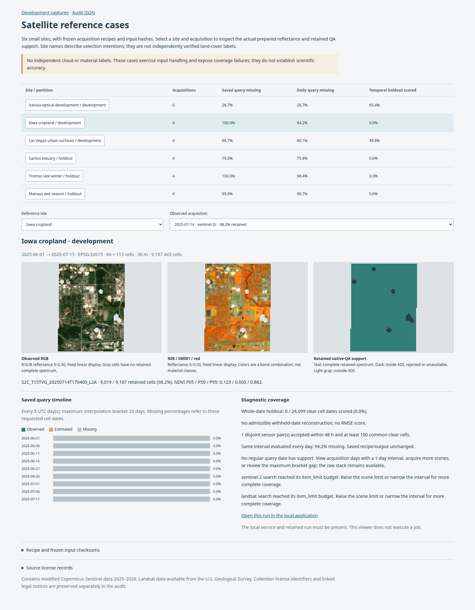
ACTUAL SATELLITE INPUTS / ENGINEERING REFERENCESInspect reference cases across six sitesFrozen source inventories and partitions, acquisition RGB and false-color reflectance, native-QA support, and separate saved/daily query coverage. Missing data and unscored holdouts remain visible. No independent accuracy labels. Interactive viewer · Numerical audit.
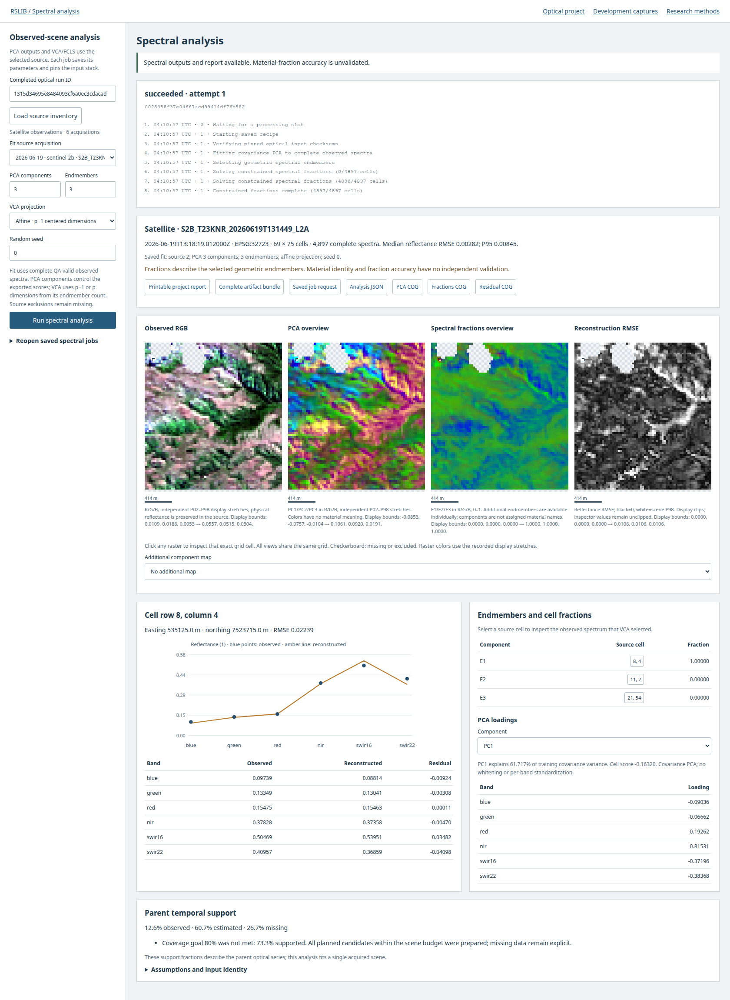
WORKING BROWSER / SATELLITE OBSERVATIONSExecute and reopen spectral analysesSaved source acquisition and parameters, pinned input SHA256, durable jobs, component maps/loadings, source-cell inspection, cancellation/retry and a reproducible report bundle. Fractions remain geometric components with unvalidated material identity. Actual interaction evidence · Mobile · Saved request · Full analysis record.
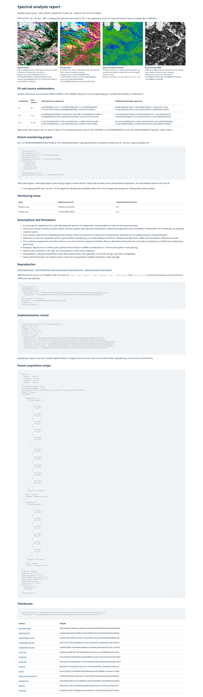
COMPUTED REPORT / SATELLITE OBSERVATIONSProject context and reproducible artifactsThe report preserves parent observed/estimated/missing support and unmet coverage goals alongside the single-scene fit, source spectra, limitations, runtime/source versions and downloadable artifacts. The parent source cube is referenced by checksum rather than duplicated in the bundle.
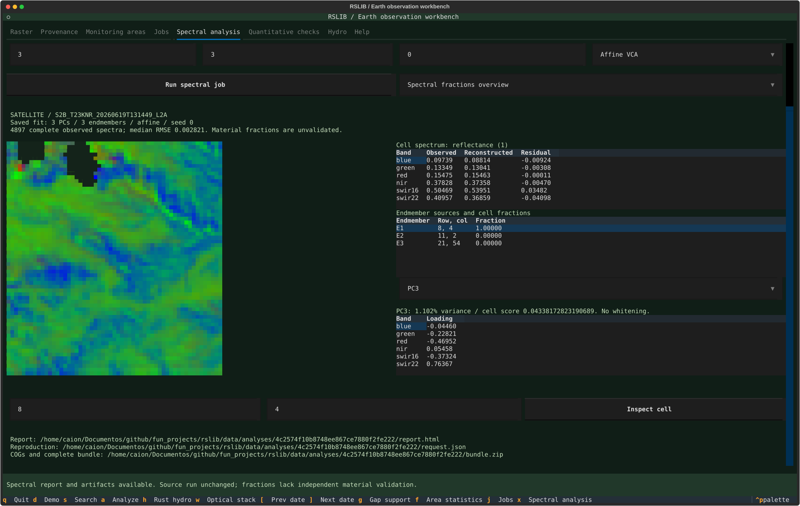
WORKING TERMINAL / SHARED SATELLITE JOBSame result in the terminal, CLI and PythonReopen the browser job, inspect cells and choose component maps/loadings. Separate CLI/Python runs match numerical outputs on the exact pinned input. Four-interface evidence · Real process-kill recovery of the spectral fit.
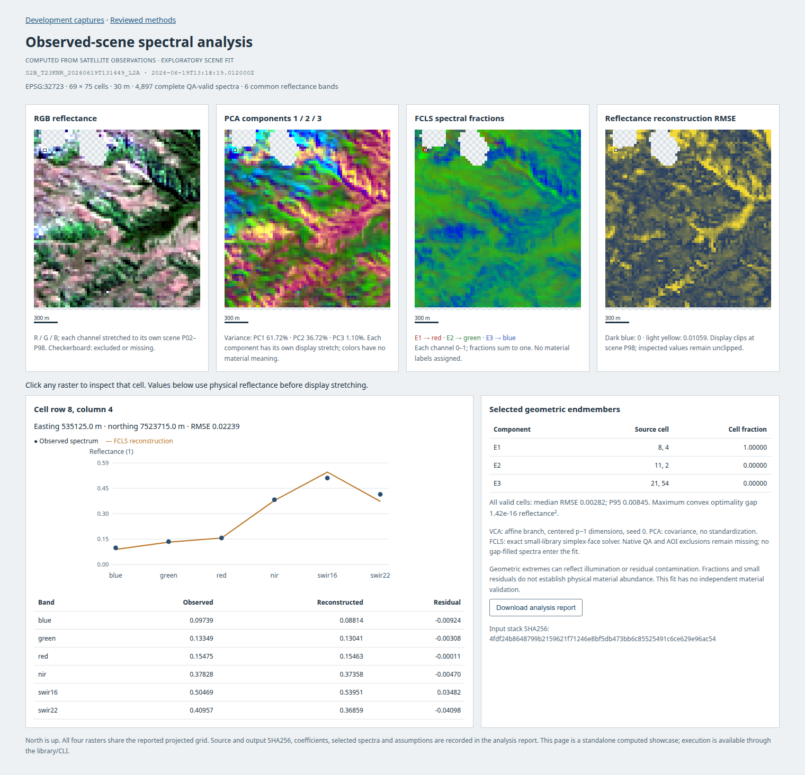
COMPUTED SPECTRAL ANALYSIS / SATELLITE OBSERVATIONSPCA, VCA and constrained spectral fractionsOne observed Sentinel-2 scene, 4,897 complete QA-valid cells. Inspect four aligned rasters, selected source endmembers, physical band values and reconstruction residuals. Endmembers are numbered; material identity and fraction accuracy remain unvalidated. Interactive figure · Coefficients, sources and hashes · Browser checks.
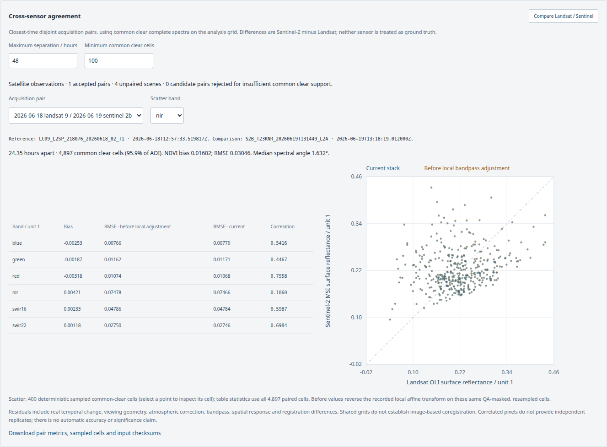
WORKING BROWSER / SATELLITE PAIRCross-sensor agreement on common clear cellsA Landsat-9 / Sentinel-2B pair separated by 24.35 hours. All six bands, local coefficient reversal, NDVI residuals and spectral angles; plotted cells enter the source inspector. NIR agreement is weak (r=0.186) despite NDVI r=0.979. Complete quantitative result · Interaction checks · Mobile.
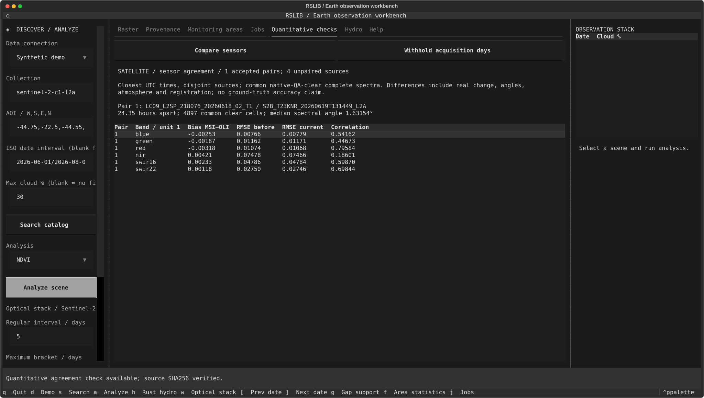
WORKING TERMINAL / SATELLITE PAIRShared quantitative checksSensor agreement and whole-date reconstruction checks use the same verified input run in the browser, CLI and TUI. Terminal evidence.
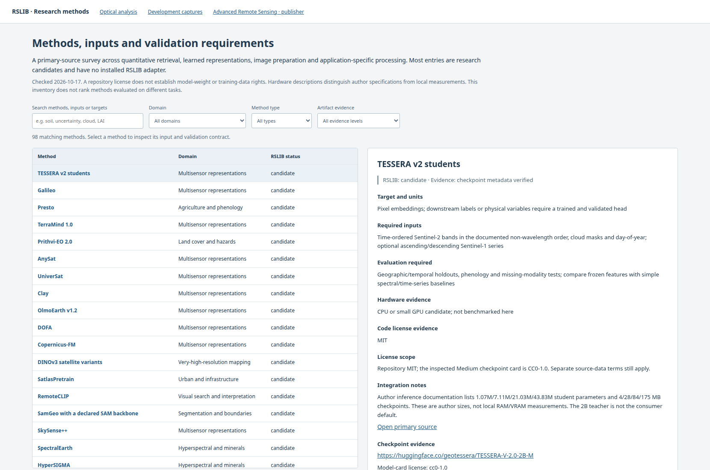
RESEARCH TOOL / CANDIDATES IDENTIFIEDReviewed methods and input contractsSearch 98 methods across quantitative EO applications, including 28 classical-method records. Each entry identifies inputs, units, source/license evidence and evaluation gates. This is a research inventory, not an installed-operation menu. Open searchable inventory.
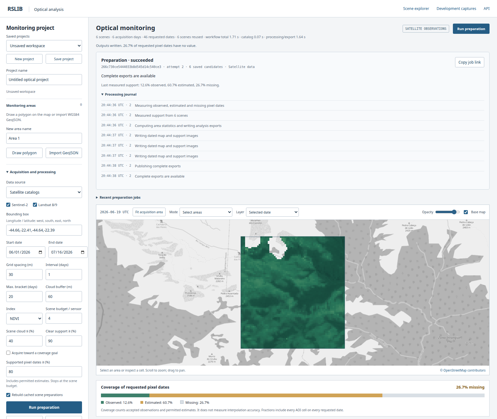
WORKING BROWSER / SATELLITE OBSERVATIONSRecoverable preparation jobsCancel, retry the saved job and reload during execution without another recipe submission. The journal identifies scene reads/cache use, measured coverage and publication. Separately, a real process-kill test recovered the same job/run after a native scene checkpoint. Process-kill evidence · synthetic rasters · Browser acceptance · satellite inputs · Mobile.
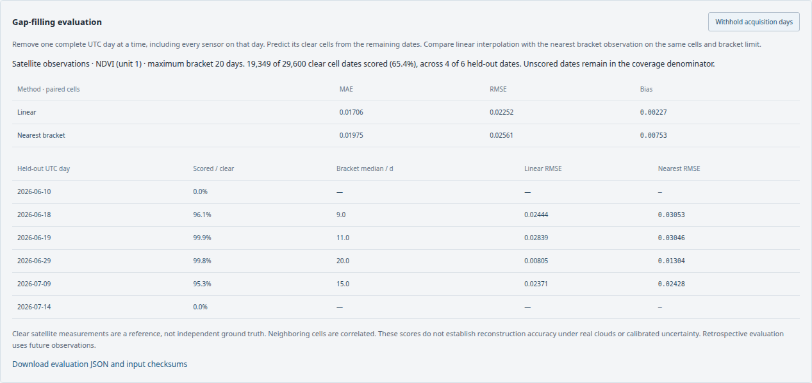
COMPUTED EVALUATION / SATELLITE OBSERVATIONSWithheld acquisition days and a paired baselineSix actual acquisition days, all sensors removed on each held-out day. Linear NDVI RMSE 0.02252; nearest-bracket RMSE 0.02561 on the same 19,349 cell dates. Only 65.37% of held-out clear cell dates were scorable. This local retrospective check does not validate performance under real clouds or cross-region accuracy. Per-date scores, method and input SHA256.
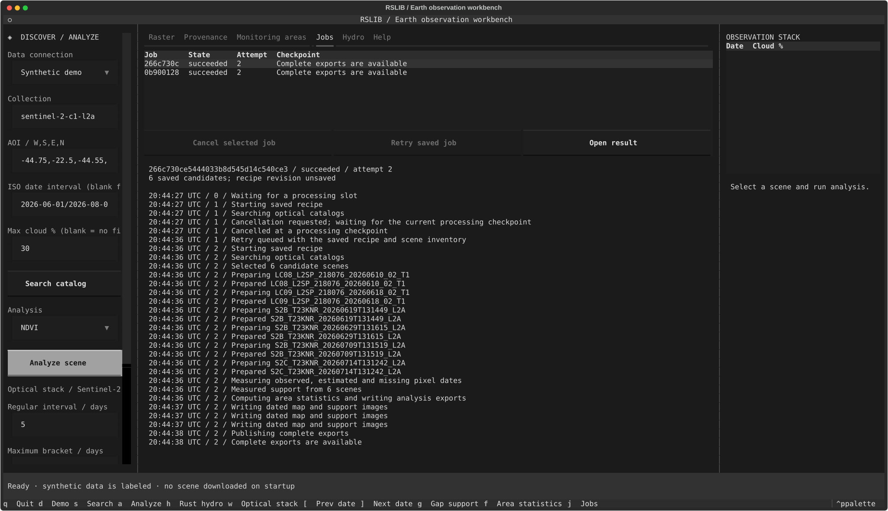
WORKING TERMINAL / SATELLITE JOBInspect the same job in the TUIBrowse persisted attempts, cancel or retry a selected job, and open its completed result. The terminal shares an existing worker or starts one when no server owns the data directory. Same-job reopening evidence.
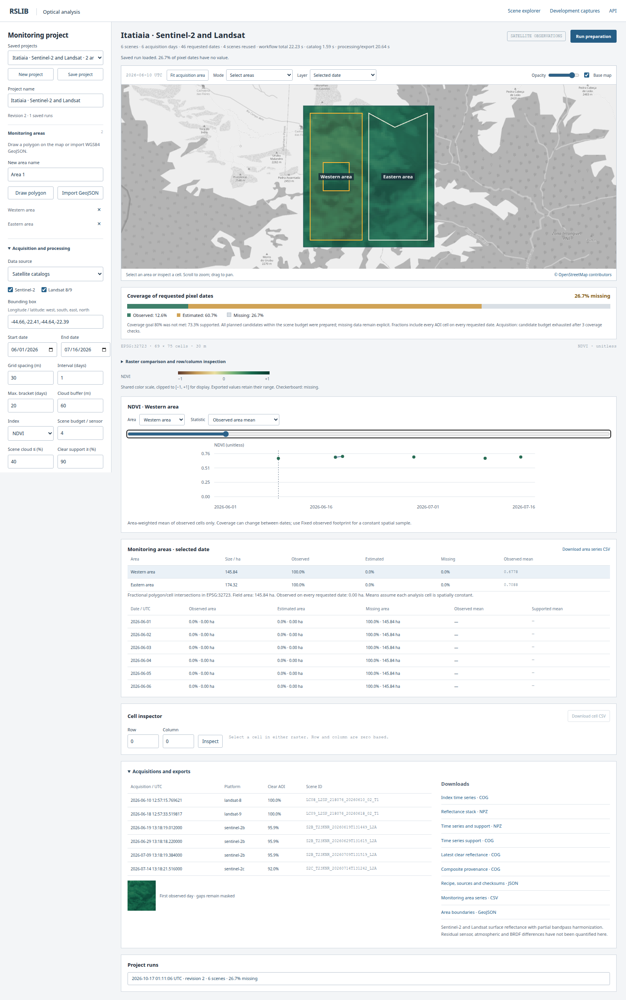
CURRENT WORKSPACE / SATELLITE OBSERVATIONSSaved monitoring project with area statisticsSix actual acquisitions, named analysis polygons, source inspection and per-date observed/estimated/missing area. The acquisition loop increased supported pixel dates from 23.65% to 73.34%; most of the gain is permitted linear estimates. The 80% goal remained unmet. Sources and acquisition steps · External aggregation comparison.
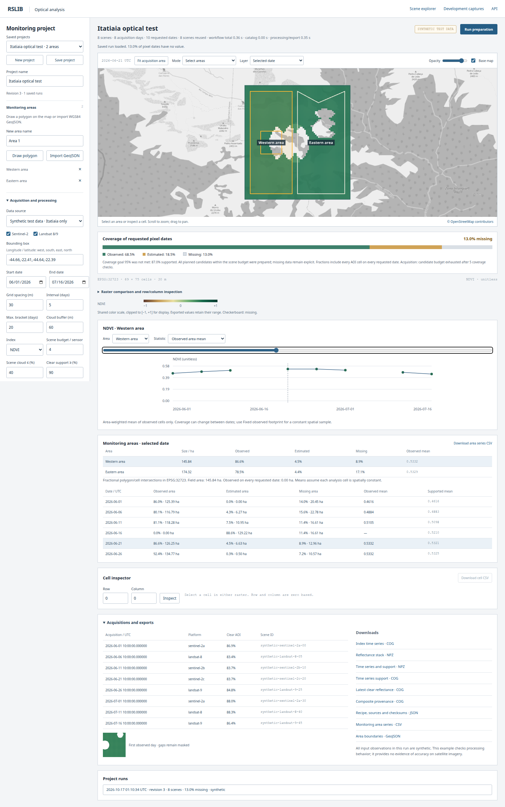
CURRENT WORKSPACE / SYNTHETIC OBSERVATIONSPolygon projects, map selection and coverage reviewActual drawing/import, saved revisions, run history, field selection, original-cell inspection, area CSV and persistent reopening. Polygon holes contribute no area. Interaction evidence · Area CSV · Support view · Mobile.
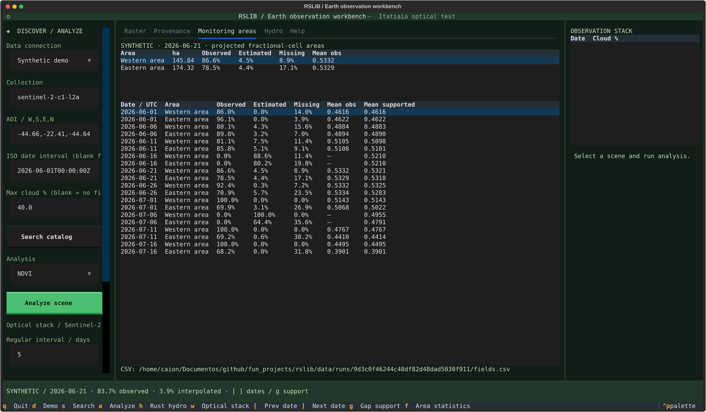
CURRENT TERMINAL / SYNTHETIC OBSERVATIONSOpen the saved project in the terminalThe same boundaries, completed run and area results load without another acquisition. Navigate dates with [ and ], open areas with f, or execute the saved recipe with w. Terminal evidence.
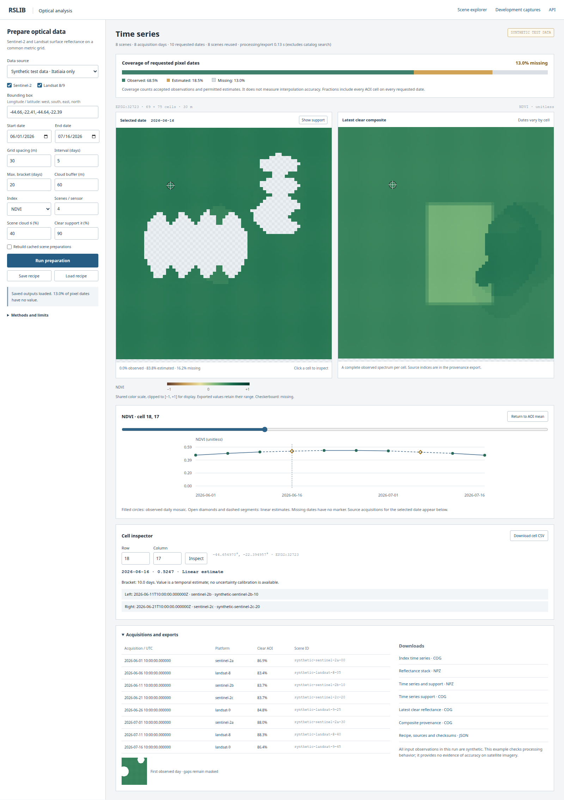
EARLIER INTERFACE / SYNTHETIC INPUTCell inspection and coverageSelected-cell values, observed/estimated markers, original source brackets and CSV export. Recipes can be saved and loaded; run URLs reopen persisted outputs. Interaction evidence · Mobile capture.
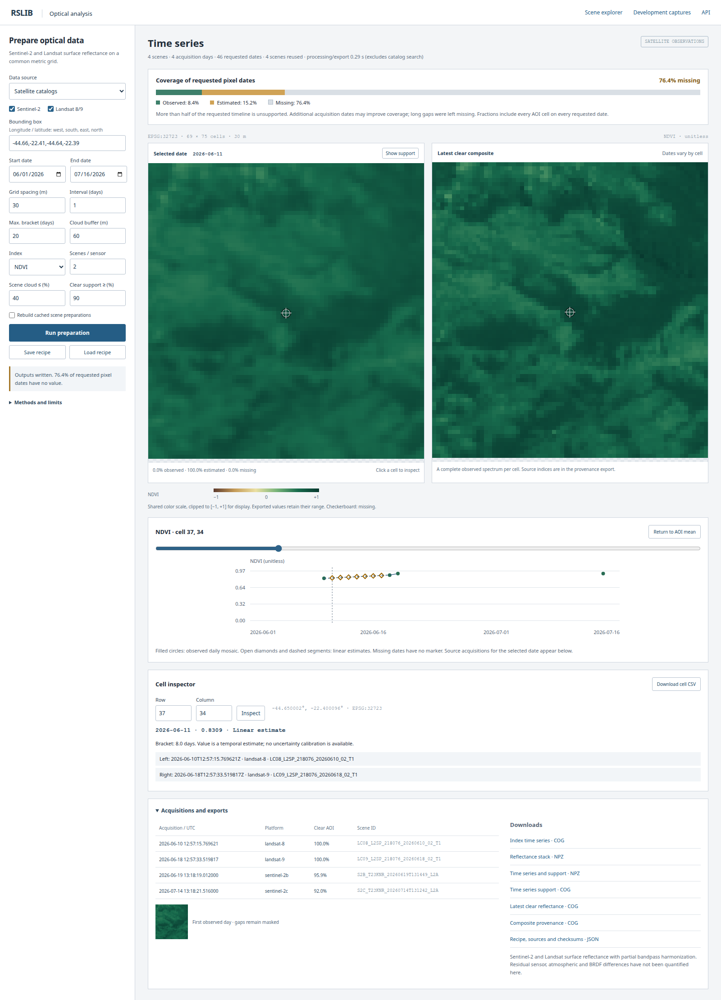
EARLIER INTERFACE / SATELLITE INPUTSatellite cell values and source bracketsFour actual source acquisitions; the requested daily series remains mostly unsupported. This capture documents inspection and missing-data reporting, not reconstructed-image accuracy. Sources and inspection evidence.
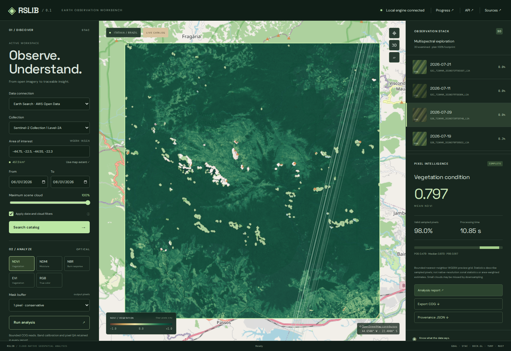
WORKING SOFTWARE / LIVE DATA01 / Sentinel-2 preview analysisSTAC search → AOI COG reads → calibrated reflectance → pixel quality masks → NDVI, georeferenced export and provenance. Actual Sentinel-2 C1 observations; see capture evidence for the selected scene.
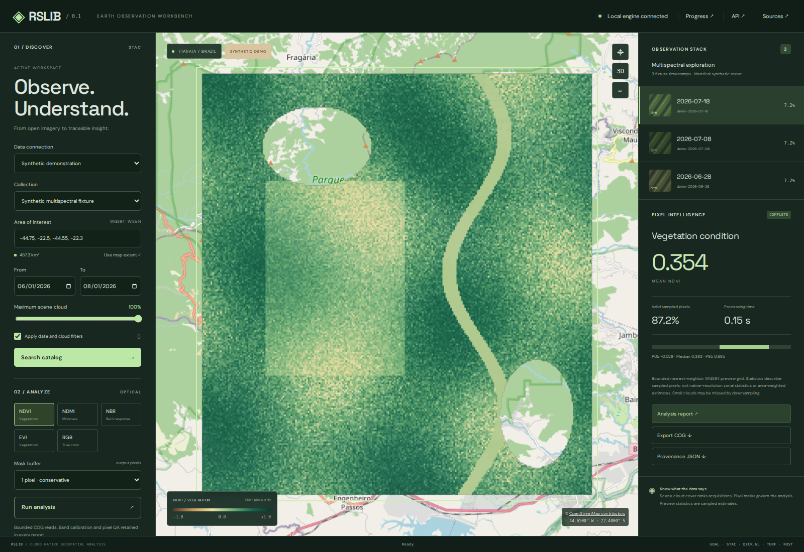
WORKING SOFTWARE / SYNTHETIC INPUT03 / Synthetic preview fixtureOffline synthetic multispectral fixture, cloud-masked on the shared analysis pipeline. Basemap is real; the NDVI raster is synthetic.
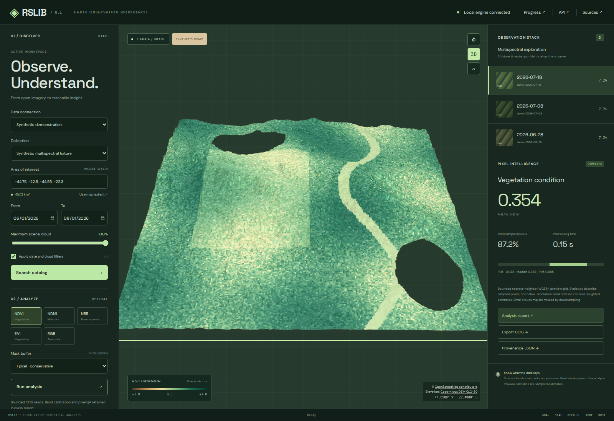
WORKING SOFTWARE / MIXED SOURCES04 / Copernicus elevation meshActual Copernicus DEM GLO-30 elevation acquired from AWS, with synthetic NDVI texture on a georeferenced deck.gl mesh. Missing analysis pixels remain transparent.
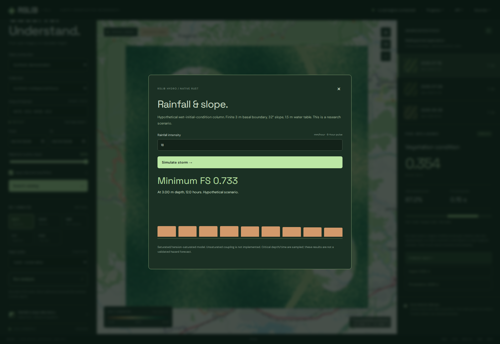
WORKING SOFTWARE / HYPOTHETICAL SCENARIO05 / Rust simulation dialogRust rainfall-pulse diffusion and slope-stability calculations exposed in the browser. The material parameters are hypothetical.
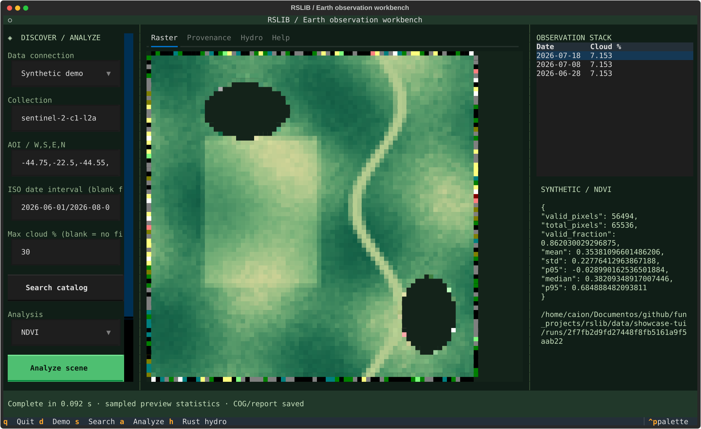
WORKING SOFTWARE / SYNTHETIC INPUT06 / Terminal scene analysisActual terminal application with asynchronous discovery and analysis, provenance, and universal RGB half-block imagery.
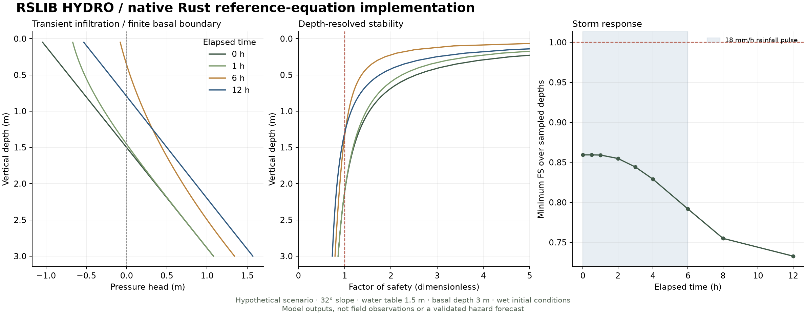
ACTUAL COMPUTATION / RESEARCH SCENARIO07 / Computed pressure and stability profilesPressure-head evolution, depth-resolved stability and delayed storm response calculated by the native solver. Input JSON · Result JSON · Vector figure. These are not measured field data or validated hazard forecasts.
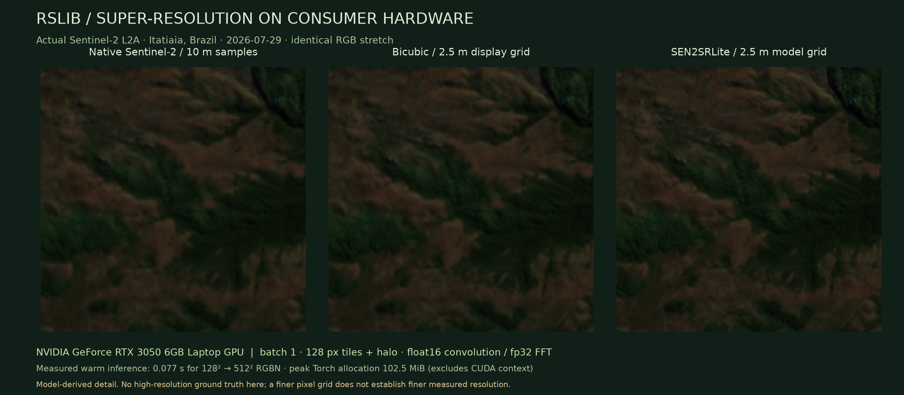
ACTUAL INFERENCE / LIVE SATELLITE INPUT08 / SEN2SRLite inference on RTX 3050Native 10 m Sentinel-2 RGBN → 2.5 m model grid with verified SEN2SRLite weights. RTX 3050 6 GB: 0.077 s median warm inference, 102.5 MiB peak Torch allocation for 128² → 512². Driver/context excluded. No high-resolution ground truth; finer grid spacing is not verified finer resolution. Measurement and provenance.
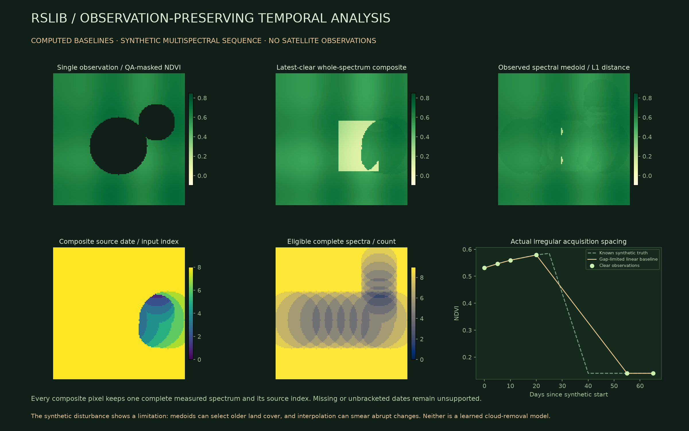
ACTUAL COMPUTATION / SYNTHETIC SEQUENCE09 / Synthetic compositing and interpolationWhole-spectrum quality and spectral-medoid composites, acquisition provenance and gap-limited interpolation. Known synthetic land-cover change illustrates the limits of temporal borrowing. These are baseline algorithms, not pretrained cloud-removal models. Computation evidence.
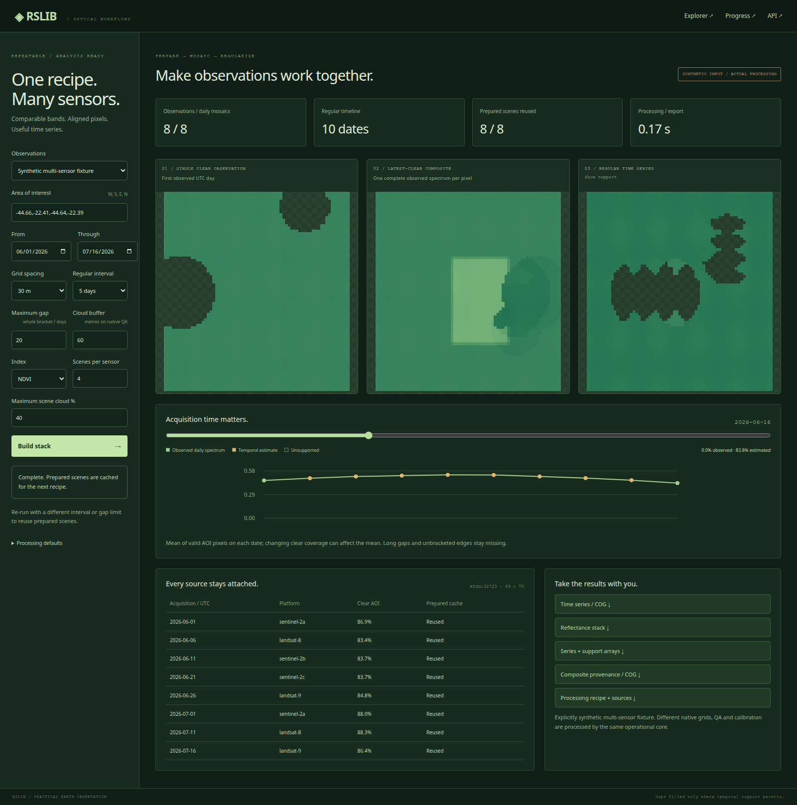
WORKING WORKFLOW / SYNTHETIC SENSOR INPUTS10 / Earlier optical workflow · synthetic inputCommon metric grids, sensor-aware bands, native QA before averaging, whole-spectrum mosaics and a regular timeline. Actual processing over an explicitly synthetic sequence from five emulated platforms. Re-running the recipe reuses all eight prepared scenes. Execution evidence · Support view · Mobile.
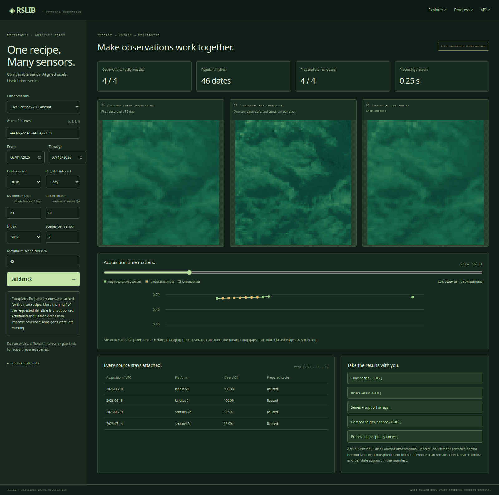
WORKING WORKFLOW / ACTUAL MULTI-SENSOR OBSERVATIONS11 / Earlier optical workflow · satellite inputFour Landsat 8/9 and Sentinel-2 B/C acquisitions on a common grid. This run left 76.35% of requested pixel dates unsupported. The earlier interface said “Complete”; the revised interface reports missing coverage directly. Sources, recipe and support evidence.
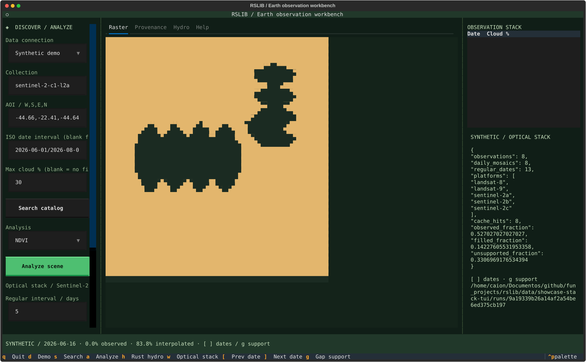
WORKING TERMINAL / SYNTHETIC SENSOR INPUTS12 / Terminal stack preparationPrepare a stack with w, move through dates with [ and ], and toggle observed/interpolated/missing support with g. Real Textual execution, using the same processing and cached artifacts as the browser.
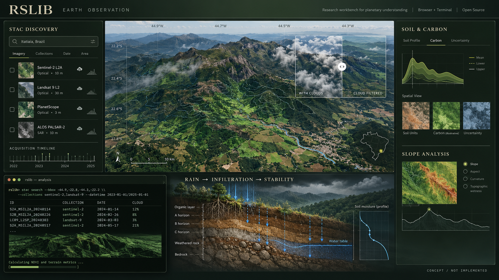
GENERATED CONCEPT / NOT IMPLEMENTED02 / Generated interface conceptAI-generated design exploration: linked terrain/soil cutaways, uncertainty, acquisition timelines and terminal views. Depicted source names and proposed features are illustrative.